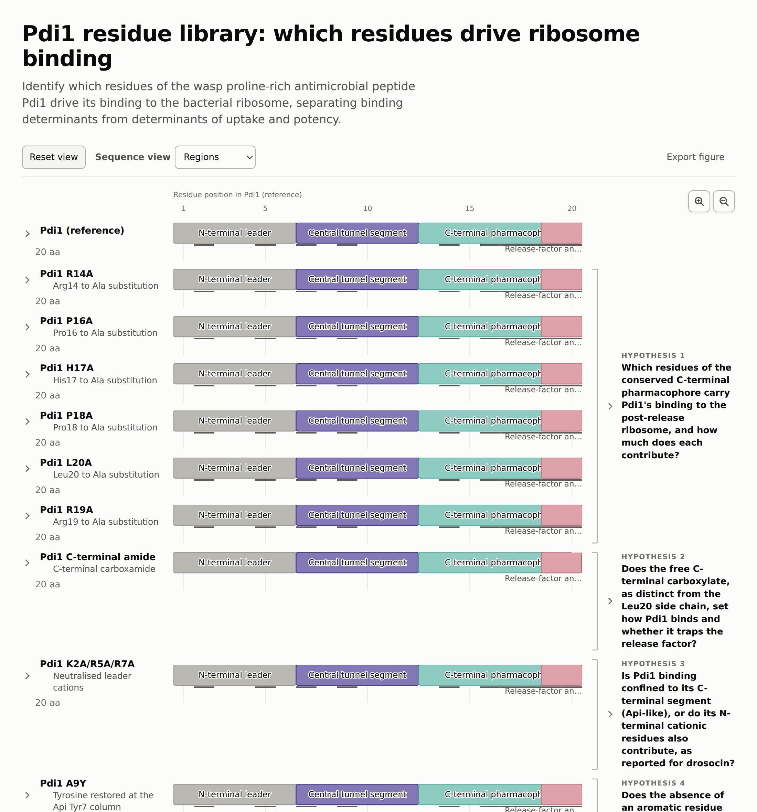

GPT 6.1 sol (high)
10 constructs (8 candidates, 1 control, 1 reference) · 2 hypotheses · 6 cited sources, 4 checked against their identifiers
Construct Maps / Pdi1: which residues bind the ribosome
Which residues of the proline-rich antimicrobial peptide Pdi1 drive its binding to the bacterial ribosome?
Design a library of variants of the proline-rich antimicrobial peptide Pdi1 (wasp Pimpla disparis, GKPNRPRPAPIQPRPPHPRL) to identify which residues drive its binding to the bacterial ribosome. Only use literature published before 2026-01-01.
Dean TT, Ziyad A, Klepacki D, Villegas JA, Moore TW. Molecular determinants of ribosome binding for the antimicrobial peptide Pdi1. ACS Chemical Biology 2026;21(8):1897–1905. 10.1021/acschembio.6c00052
| Tested in the paper | GPT 6.1 sol (high) | Claude Sonnet 5.5 (high) |
|---|---|---|
| Alanine substitutions along the C-terminus: R14A, P15A, P16A, H17A, P18A, R19A, L20AResults: Evaluation of Pdi1 Binding Affinity; Table 2 and Supplemental Material | Same edit pdi1-r14a pdi1-p15a pdi1-p16a pdi1-h17a pdi1-p18a pdi1-r19a pdi1-l20aall seven, plus P13A | Related R14A P16A H17A P18A R19A L20Asix of the seven; no P15A |
| H17A, which lost termination inhibition while keeping a submicromolar MICResults: Evaluation of Ribosome Stalling for Pdi1 Derivatives; Antibiotic Activity of Pdi1 Derivatives | Same edit pdi1-h17a | Same edit H17A |
| A scrambled Pdi1, the negative controlResults: Antibiotic Activity of Pdi1 Derivatives | Not proposed | Not proposed |
✓ the same edit · ~ related, a different change at the same place or the same idea · – not proposed. Constructs are named as in each library's record.
10 constructs (8 candidates, 1 control, 1 reference) · 2 hypotheses · 6 cited sources, 4 checked against their identifiers

10 constructs (8 candidates, 1 control, 1 reference) · 4 hypotheses · 12 cited sources, 12 checked against their identifiers